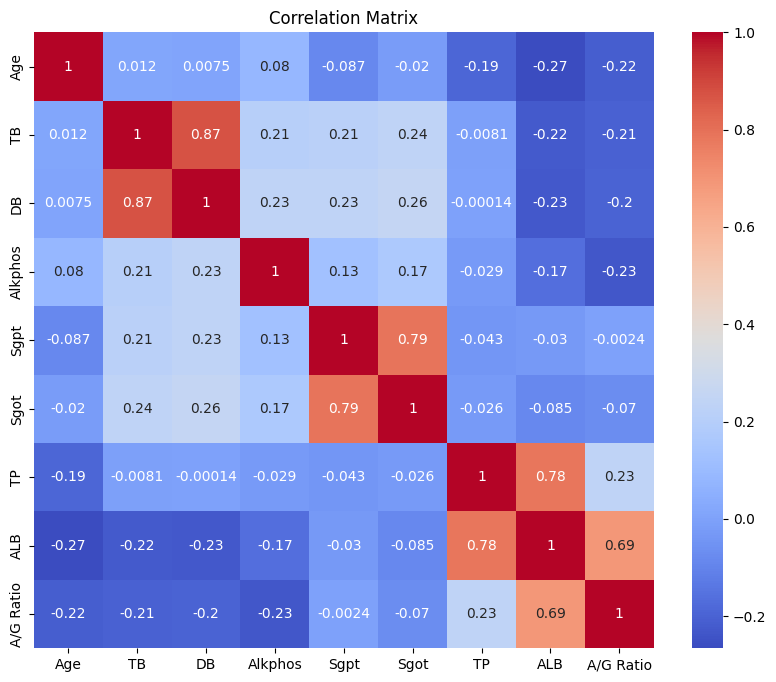
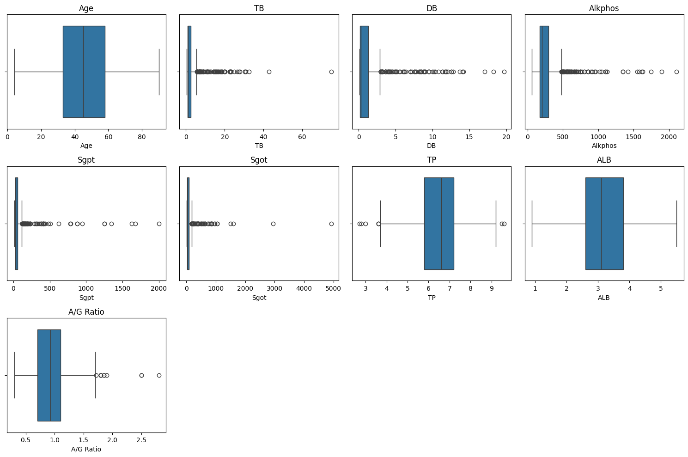

Klasifikasi UAS#
pip install ucimlrepo
Requirement already satisfied: ucimlrepo in /usr/local/lib/python3.11/dist-packages (0.0.7)
Requirement already satisfied: pandas>=1.0.0 in /usr/local/lib/python3.11/dist-packages (from ucimlrepo) (2.2.2)
Requirement already satisfied: certifi>=2020.12.5 in /usr/local/lib/python3.11/dist-packages (from ucimlrepo) (2025.6.15)
Requirement already satisfied: numpy>=1.23.2 in /usr/local/lib/python3.11/dist-packages (from pandas>=1.0.0->ucimlrepo) (2.0.2)
Requirement already satisfied: python-dateutil>=2.8.2 in /usr/local/lib/python3.11/dist-packages (from pandas>=1.0.0->ucimlrepo) (2.9.0.post0)
Requirement already satisfied: pytz>=2020.1 in /usr/local/lib/python3.11/dist-packages (from pandas>=1.0.0->ucimlrepo) (2025.2)
Requirement already satisfied: tzdata>=2022.7 in /usr/local/lib/python3.11/dist-packages (from pandas>=1.0.0->ucimlrepo) (2025.2)
Requirement already satisfied: six>=1.5 in /usr/local/lib/python3.11/dist-packages (from python-dateutil>=2.8.2->pandas>=1.0.0->ucimlrepo) (1.17.0)
from ucimlrepo import fetch_ucirepo
# fetch dataset
ilpd_indian_liver_patient_dataset = fetch_ucirepo(id=225)
# data (as pandas dataframes)
X = ilpd_indian_liver_patient_dataset.data.features
y = ilpd_indian_liver_patient_dataset.data.targets
# metadata
print(ilpd_indian_liver_patient_dataset.metadata)
# variable information
print(ilpd_indian_liver_patient_dataset.variables)
{'uci_id': 225, 'name': 'ILPD (Indian Liver Patient Dataset)', 'repository_url': 'https://archive.ics.uci.edu/dataset/225/ilpd+indian+liver+patient+dataset', 'data_url': 'https://archive.ics.uci.edu/static/public/225/data.csv', 'abstract': 'Death by liver cirrhosis continues to increase, given the increase in alcohol consumption rates, chronic hepatitis infections, and obesity-related liver disease. Notwithstanding the high mortality of this disease, liver diseases do not affect all sub-populations equally. The early detection of pathology is a determinant of patient outcomes, yet female patients appear to be marginalized when it comes to early diagnosis of liver pathology. \nThe dataset comprises 584 patient records collected from the NorthEast of Andhra Pradesh, India.\nThe prediction task is to determine whether a patient suffers from liver disease based on the information about several biochemical markers, including albumin and other enzymes required for metabolism.\n', 'area': 'Health and Medicine', 'tasks': ['Classification'], 'characteristics': ['Multivariate'], 'num_instances': 583, 'num_features': 10, 'feature_types': ['Integer', 'Real'], 'demographics': ['Age', 'Gender'], 'target_col': ['Selector'], 'index_col': None, 'has_missing_values': 'no', 'missing_values_symbol': None, 'year_of_dataset_creation': 2022, 'last_updated': 'Fri Nov 03 2023', 'dataset_doi': '10.24432/C5D02C', 'creators': ['Bendi Ramana', 'N. Venkateswarlu'], 'intro_paper': {'ID': 242, 'type': 'NATIVE', 'title': 'Investigating for bias in healthcare algorithms: a sex-stratified analysis of supervised machine learning models in liver disease prediction', 'authors': 'I. Straw, Honghan Wu', 'venue': 'BMJ Health & Care Informatics', 'year': 2022, 'journal': None, 'DOI': '10.1136%2Fbmjhci-2021-100457', 'URL': 'https://www.semanticscholar.org/paper/df37b91a72fb4fb11dc9ac3d63c1479428e4f14d', 'sha': None, 'corpus': None, 'arxiv': None, 'mag': None, 'acl': None, 'pmid': None, 'pmcid': None}, 'additional_info': {'summary': "This data set contains records of 416 patients diagnosed with liver disease and 167 patients without liver disease. This information is contained in the class label named 'Selector'. There are 10 variables per patient: age, gender, total Bilirubin, direct Bilirubin, total proteins, albumin, A/G ratio, SGPT, SGOT and Alkphos. Of the 583 patient records, 441 are male, and 142 are female. \n\nThe current dataset has been used to study \n- differences in patients across US and Indian patients that suffer from liver diseases.\n- gender-based disparities in predicting liver disease, as previous studies have found that biochemical markers do not have the same effectiveness for male and female patients.\n", 'purpose': None, 'funded_by': None, 'instances_represent': 'Medical patients', 'recommended_data_splits': None, 'sensitive_data': 'Yes. The data contains information about the age and gender of the patients.', 'preprocessing_description': 'Any patient whose age exceeded 89 is listed as being of age "90".', 'variable_info': None, 'citation': 'The original dataset was first proposed by Ramana et al. (2012) as a critical comparison of patients across USA and India:\nRamana, Bendi & Surendra, M & Babu, Prasad & Bala Venkateswarlu, Nagasuri. (2012). A Critical Comparative Study of Liver Patients from USA and INDIA: An Exploratory Analysis. International Journal of Computer Science. 9. '}}
name role type demographic \
0 Age Feature Integer Age
1 Gender Feature Binary Gender
2 TB Feature Continuous None
3 DB Feature Continuous None
4 Alkphos Feature Integer None
5 Sgpt Feature Integer None
6 Sgot Feature Integer None
7 TP Feature Continuous None
8 ALB Feature Continuous None
9 A/G Ratio Feature Continuous None
10 Selector Target Binary None
description units missing_values
0 Age of the patient. Any patient whose age exce... years no
1 Gender of the patient None no
2 Total Bilirubin None no
3 Direct Bilirubin None no
4 Alkaline Phosphotase None no
5 Alamine Aminotransferase None no
6 Aspartate Aminotransferase None no
7 Total Proteins None no
8 Albumin None no
9 Albumin and Globulin Ratio None no
10 Selector field used to split the data into two... None no
print(X.head(10))
print(X.columns)
print(y.head(10))
print(y.columns)
Age Gender TB DB Alkphos Sgpt Sgot TP ALB A/G Ratio
0 65 Female 0.7 0.1 187 16 18 6.8 3.3 0.90
1 62 Male 10.9 5.5 699 64 100 7.5 3.2 0.74
2 62 Male 7.3 4.1 490 60 68 7.0 3.3 0.89
3 58 Male 1.0 0.4 182 14 20 6.8 3.4 1.00
4 72 Male 3.9 2.0 195 27 59 7.3 2.4 0.40
5 46 Male 1.8 0.7 208 19 14 7.6 4.4 1.30
6 26 Female 0.9 0.2 154 16 12 7.0 3.5 1.00
7 29 Female 0.9 0.3 202 14 11 6.7 3.6 1.10
8 17 Male 0.9 0.3 202 22 19 7.4 4.1 1.20
9 55 Male 0.7 0.2 290 53 58 6.8 3.4 1.00
Index(['Age', 'Gender', 'TB', 'DB', 'Alkphos', 'Sgpt', 'Sgot', 'TP', 'ALB',
'A/G Ratio'],
dtype='object')
Selector
0 1
1 1
2 1
3 1
4 1
5 1
6 1
7 1
8 2
9 1
Index(['Selector'], dtype='object')
import seaborn as sns
import matplotlib.pyplot as plt
plt.figure(figsize=(10, 8))
sns.heatmap(X.corr(numeric_only=True), annot=True, cmap='coolwarm')
plt.title("Correlation Matrix")
plt.show()

import pandas as pd
# Hanya untuk fitur numerik
numeric_cols = X.select_dtypes(include=['float64', 'int64']).columns
outlier_indices = {}
for col in numeric_cols:
Q1 = X[col].quantile(0.25)
Q3 = X[col].quantile(0.75)
IQR = Q3 - Q1
lower = Q1 - 1.5 * IQR
upper = Q3 + 1.5 * IQR
outliers = X[(X[col] < lower) | (X[col] > upper)].index
outlier_indices[col] = outliers
print(f"{col}: {len(outliers)} outliers")
Age: 0 outliers
TB: 84 outliers
DB: 81 outliers
Alkphos: 69 outliers
Sgpt: 73 outliers
Sgot: 66 outliers
TP: 8 outliers
ALB: 0 outliers
A/G Ratio: 10 outliers
import matplotlib.pyplot as plt
import seaborn as sns
plt.figure(figsize=(15, 10))
for i, col in enumerate(numeric_cols, 1):
plt.subplot(3, 4, i)
sns.boxplot(x=X[col])
plt.title(col)
plt.tight_layout()
plt.show()

Preprocessing#
import numpy as np
X_clean = X.copy()
numeric_cols = X_clean.select_dtypes(include=['float64', 'int64']).columns
for col in numeric_cols:
Q1 = X_clean[col].quantile(0.25)
Q3 = X_clean[col].quantile(0.75)
IQR = Q3 - Q1
lower = Q1 - 1.5 * IQR
upper = Q3 + 1.5 * IQR
# Dapatkan rata-rata data yang normal (tidak outlier)
non_outliers = X_clean[(X_clean[col] >= lower) & (X_clean[col] <= upper)][col]
mean_normal = non_outliers.mean()
# Gantikan nilai outlier dengan rata-rata non-outlier
X_clean[col] = X_clean[col].apply(
lambda x: mean_normal if x < lower or x > upper else x
)
X_clean= pd.DataFrame(X_clean)
print(X_clean.head(10))
Age Gender TB DB Alkphos Sgpt Sgot TP ALB \
0 65 Female 0.700000 0.100000 187.000000 16.0 18.0 6.8 3.3
1 62 Male 1.352705 0.545618 220.317121 64.0 100.0 7.5 3.2
2 62 Male 1.352705 0.545618 220.317121 60.0 68.0 7.0 3.3
3 58 Male 1.000000 0.400000 182.000000 14.0 20.0 6.8 3.4
4 72 Male 3.900000 2.000000 195.000000 27.0 59.0 7.3 2.4
5 46 Male 1.800000 0.700000 208.000000 19.0 14.0 7.6 4.4
6 26 Female 0.900000 0.200000 154.000000 16.0 12.0 7.0 3.5
7 29 Female 0.900000 0.300000 202.000000 14.0 11.0 6.7 3.6
8 17 Male 0.900000 0.300000 202.000000 22.0 19.0 7.4 4.1
9 55 Male 0.700000 0.200000 290.000000 53.0 58.0 6.8 3.4
A/G Ratio
0 0.90
1 0.74
2 0.89
3 1.00
4 0.40
5 1.30
6 1.00
7 1.10
8 1.20
9 1.00
import pandas as pd
import numpy as np
from sklearn.preprocessing import LabelEncoder
X_c_encoded = X_clean.copy(deep=True)
# Pastikan semua kolom numerik secara eksplisit
X_c_encoded = X_c_encoded.apply(pd.to_numeric, errors='coerce')
# Encode variabel kategorik 'Gender'
le = LabelEncoder()
X_c_encoded['Gender'] = le.fit_transform(X_c_encoded['Gender'])
# Cek hasil encoding
print("Gender classes:", le.classes_)
print("Gender encoded values:", X_c_encoded['Gender'].unique())
# Tangani nilai NaN, misalnya dengan imputasi median
print("Jumlah NaN sebelum imputasi:", X_c_encoded.isna().sum().sum())
X_c_encoded = X_c_encoded.fillna(X_c_encoded.median())
print("Jumlah NaN setelah imputasi:", X_c_encoded.isna().sum().sum())
Gender classes: [nan]
Gender encoded values: [0]
Jumlah NaN sebelum imputasi: 4
Jumlah NaN setelah imputasi: 0
print(X_clean.head(10))
print(X_clean.columns)
print(X_clean.dtypes)
print(X_clean.shape)
Age Gender TB DB Alkphos Sgpt Sgot TP ALB \
0 65 Female 0.700000 0.100000 187.000000 16.0 18.0 6.8 3.3
1 62 Male 1.352705 0.545618 220.317121 64.0 100.0 7.5 3.2
2 62 Male 1.352705 0.545618 220.317121 60.0 68.0 7.0 3.3
3 58 Male 1.000000 0.400000 182.000000 14.0 20.0 6.8 3.4
4 72 Male 3.900000 2.000000 195.000000 27.0 59.0 7.3 2.4
5 46 Male 1.800000 0.700000 208.000000 19.0 14.0 7.6 4.4
6 26 Female 0.900000 0.200000 154.000000 16.0 12.0 7.0 3.5
7 29 Female 0.900000 0.300000 202.000000 14.0 11.0 6.7 3.6
8 17 Male 0.900000 0.300000 202.000000 22.0 19.0 7.4 4.1
9 55 Male 0.700000 0.200000 290.000000 53.0 58.0 6.8 3.4
A/G Ratio
0 0.90
1 0.74
2 0.89
3 1.00
4 0.40
5 1.30
6 1.00
7 1.10
8 1.20
9 1.00
Index(['Age', 'Gender', 'TB', 'DB', 'Alkphos', 'Sgpt', 'Sgot', 'TP', 'ALB',
'A/G Ratio'],
dtype='object')
Age int64
Gender object
TB float64
DB float64
Alkphos float64
Sgpt float64
Sgot float64
TP float64
ALB float64
A/G Ratio float64
dtype: object
(583, 10)
Modelling#
KNN Classifier#
from sklearn.model_selection import train_test_split
from sklearn.preprocessing import StandardScaler
from sklearn.neighbors import KNeighborsClassifier
from sklearn.metrics import classification_report, accuracy_score
# Split data terlebih dahulu
X_train, X_test, y_train, y_test = train_test_split(X_c_encoded, y, test_size=0.2, random_state=42)
# Lakukan scaling setelah split untuk menghindari data leakage
scaler = StandardScaler()
X_train = scaler.fit_transform(X_train)
X_test = scaler.transform(X_test)
# Inisialisasi model KNN
knn = KNeighborsClassifier(n_neighbors=5)
# Training
knn.fit(X_train, y_train)
# Prediksi
y_pred = knn.predict(X_test)
# Evaluasi
print("Accuracy:", accuracy_score(y_test, y_pred))
print(classification_report(y_test, y_pred))
Accuracy: 0.6666666666666666
precision recall f1-score support
1 0.77 0.78 0.78 87
2 0.34 0.33 0.34 30
accuracy 0.67 117
macro avg 0.56 0.56 0.56 117
weighted avg 0.66 0.67 0.66 117
/usr/local/lib/python3.11/dist-packages/sklearn/neighbors/_classification.py:239: DataConversionWarning: A column-vector y was passed when a 1d array was expected. Please change the shape of y to (n_samples,), for example using ravel().
return self._fit(X, y)
Decision Tree#
from sklearn.tree import DecisionTreeClassifier
from sklearn.model_selection import train_test_split
from sklearn.metrics import classification_report, accuracy_score
# Pisahkan fitur dan target
X = X_c_encoded
y = y.values.ravel() # pastikan target 1D
# Split data menjadi train dan test
X_train, X_test, y_train, y_test = train_test_split(X, y, test_size=0.2, random_state=42)
# Inisialisasi dan latih model Decision Tree
dtree = DecisionTreeClassifier(random_state=42)
dtree.fit(X_train, y_train)
# Prediksi
y_pred = dtree.predict(X_test)
# Evaluasi
print("Accuracy:", accuracy_score(y_test, y_pred))
print(classification_report(y_test, y_pred))
Accuracy: 0.6581196581196581
precision recall f1-score support
1 0.82 0.69 0.75 87
2 0.39 0.57 0.46 30
accuracy 0.66 117
macro avg 0.60 0.63 0.60 117
weighted avg 0.71 0.66 0.68 117
Naive Bayes#
from sklearn.naive_bayes import GaussianNB, CategoricalNB
from sklearn.model_selection import train_test_split
from sklearn.preprocessing import StandardScaler
from sklearn.metrics import accuracy_score, classification_report
import numpy as np
# Pisahkan fitur numerik dan kategorikal secara eksplisit
X_num = X_c_encoded.drop(columns=['Gender'])
X_cat = X_c_encoded[['Gender']] # pastikan ini hanya kategorikal
# Split data
X_num_train, X_num_test, y_train, y_test = train_test_split(X_num, y, test_size=0.2, random_state=42)
X_cat_train, X_cat_test = train_test_split(X_cat, test_size=0.2, random_state=42)
# Pastikan target adalah array 1D
y_train = y_train.values.ravel()
y_test = y_test.values.ravel()
# Tangani NaN di data numerik sebelum scaling
X_num_train = X_num_train.fillna(X_num_train.median())
X_num_test = X_num_test.fillna(X_num_train.median())
# Scaling numerik
scaler = StandardScaler()
X_num_train = scaler.fit_transform(X_num_train)
X_num_test = scaler.transform(X_num_test)
# Model GaussianNB
gnb = GaussianNB()
gnb.fit(X_num_train, y_train)
# Model CategoricalNB
cnb = CategoricalNB()
cnb.fit(X_cat_train, y_train)
# Log-probabilitas
log_prob_gnb = gnb.predict_log_proba(X_num_test)
log_prob_cnb = cnb.predict_log_proba(X_cat_test)
# Gabungan prediksi log-proba
combined_log_prob = log_prob_gnb + log_prob_cnb
y_pred = gnb.classes_[np.argmax(combined_log_prob, axis=1)]
# Evaluasi
print("Accuracy:", accuracy_score(y_test, y_pred))
print(classification_report(y_test, y_pred))
---------------------------------------------------------------------------
AttributeError Traceback (most recent call last)
/tmp/ipython-input-12-2558487726.py in <cell line: 0>()
14
15 # Pastikan target adalah array 1D
---> 16 y_train = y_train.values.ravel()
17 y_test = y_test.values.ravel()
18
AttributeError: 'numpy.ndarray' object has no attribute 'values'
Deploy#
# Ambil 10 data awal sebagai data testing
X_test_deploy = X_c_encoded.iloc[:10].copy()
X_num_deploy = X_test_deploy.drop(columns=['Gender'])
X_cat_deploy = X_test_deploy[['Gender']]
# Gunakan median dari data numerik training sebelum scaling
X_num_median = X_num.median() # ← simpan ini sebelum split/scaling
# Imputasi NaN pada data deploy
X_num_deploy = X_num_deploy.fillna(X_num_median)
# Scaling dengan scaler yang dilatih dari training
X_num_deploy = scaler.transform(X_num_deploy)
# Prediksi log-proba
log_prob_deploy_gnb = gnb.predict_log_proba(X_num_deploy)
log_prob_deploy_cnb = cnb.predict_log_proba(X_cat_deploy)
# Gabungkan log-probabilitas dan prediksi akhir
combined_log_prob_deploy = log_prob_deploy_gnb + log_prob_deploy_cnb
y_pred_deploy = gnb.classes_[np.argmax(combined_log_prob_deploy, axis=1)]
# Tampilkan data + hasil prediksi
import pandas as pd
results = X_test_deploy.copy()
results["Predicted Label"] = y_pred_deploy
print(results)
Age Gender TB DB Alkphos Sgpt Sgot TP ALB \
0 65 0 0.700000 0.100000 187.000000 16.0 18.0 6.8 3.3
1 62 0 1.352705 0.545618 220.317121 64.0 100.0 7.5 3.2
2 62 0 1.352705 0.545618 220.317121 60.0 68.0 7.0 3.3
3 58 0 1.000000 0.400000 182.000000 14.0 20.0 6.8 3.4
4 72 0 3.900000 2.000000 195.000000 27.0 59.0 7.3 2.4
5 46 0 1.800000 0.700000 208.000000 19.0 14.0 7.6 4.4
6 26 0 0.900000 0.200000 154.000000 16.0 12.0 7.0 3.5
7 29 0 0.900000 0.300000 202.000000 14.0 11.0 6.7 3.6
8 17 0 0.900000 0.300000 202.000000 22.0 19.0 7.4 4.1
9 55 0 0.700000 0.200000 290.000000 53.0 58.0 6.8 3.4
A/G Ratio Predicted Label
0 0.90 2
1 0.74 1
2 0.89 1
3 1.00 2
4 0.40 1
5 1.30 2
6 1.00 2
7 1.10 2
8 1.20 2
9 1.00 1